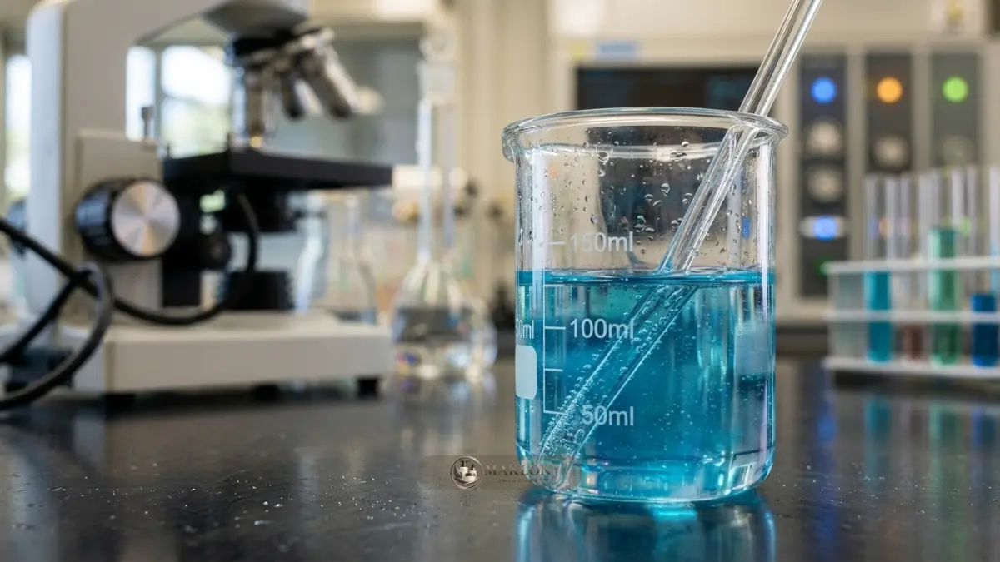
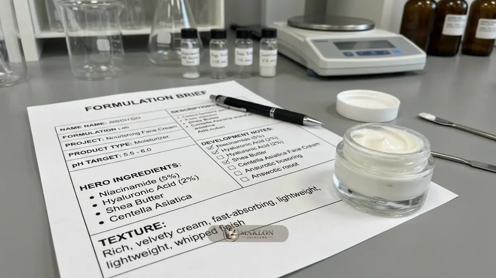

Formulasi maklon skincare OEM adalah proses merancang formula, dari target kulit dan klaim hingga pemilihan bahan aktif hero yang stabil, aman, dan sesuai regulasi.
- Formulasi dimulai dari target kulit dan klaim, bukan dari bahan yang sedang tren.
- Bahan aktif hero adalah bahan utama yang menjadi dasar klaim dan alasan konsumen membeli.
- Brief yang detail mempercepat pengembangan formula dan mengurangi revisi.
- Stabilitas, keamanan, regulasi BPOM, dan kehalalan bahan harus dipertimbangkan sejak awal.
Apa Itu Formulasi dan Bahan Aktif Hero dalam Maklon Skincare OEM?
Formulasi adalah perancangan komposisi produk, sedangkan bahan aktif hero adalah bahan utama yang menjadi alasan konsumen membeli dan dasar klaim manfaat produk skincare.
Dalam skema OEM, brand menyampaikan konsep dan spesifikasi, lalu formulator pabrik merancang komposisi: bahan aktif, pelarut, pengemulsi, pengawet, pengatur pH, tekstur, dan aroma.
Bahan aktif hero menjadi "bintang" produk, misalnya niacinamide pada serum pencerah atau ceramide pada pelembap penguat skin barrier.
Bahan pendukung tetap penting. Formula dengan bahan aktif bagus tetapi stabilitas buruk dapat berubah warna, bau, atau tekstur sebelum sampai ke konsumen.
Karena itu, formulasi yang baik menyeimbangkan manfaat, keamanan, kenyamanan pemakaian, dan umur simpan produk sediaan.
Mengapa Formulasi Menentukan Keberhasilan Brand Skincare?
Formulasi menentukan keberhasilan brand skincare karena formula memengaruhi manfaat, keamanan, tekstur, stabilitas, dan kepercayaan konsumen, yang semuanya berdampak pada pembelian ulang.
Konsumen dapat menilai kemasan dan iklan, tetapi pembelian ulang sangat bergantung pada pengalaman memakai produk di kulit setiap hari. Formula yang nyaman dan memberi hasil sesuai ekspektasi akan memicu ulasan positif dan rekomendasi organik.
Faktor pasokan juga berpengaruh besar. Kemenperin menyampaikan pada Mei 2026 bahwa bahan baku kosmetik nasional masih didominasi impor hingga sekitar 80 persen. Bagi brand, ini berarti ketersediaan dan harga bahan aktif dapat berfluktuasi, sehingga perlu didiskusikan dengan pabrik sejak awal.
Aspek halal kini ikut menentukan. BPJPH menyatakan produk kosmetik wajib bersertifikat halal setelah 17 Oktober 2026, dan pada Mei 2025 telah tercatat 81.343 produk kosmetik dalam negeri yang bersertifikat halal. Bahan yang dipilih harus memiliki dokumen kehalalan yang sah.
Bagaimana Cara Memilih Bahan Aktif Hero yang Tepat?
Pilih bahan aktif hero berdasarkan masalah kulit target, bukti manfaat, keamanan, kecocokan dengan tekstur dan kemasan, ketersediaan pasokan, serta kesesuaian dengan regulasi dan sertifikasi halal.
- Masalah kulit target: Tentukan satu masalah utama yang spesifik, seperti kulit kusam, dehidrasi, atau minyak berlebih.
- Bukti manfaat: Pilih bahan yang efektivitasnya didukung literatur ilmiah atau data uji klinis pemasok terpercaya.
- Keamanan dan toleransi: Pertimbangkan potensi iritasi kulit, terutama bila produk ditujukan bagi pemilik kulit sensitif.
- Kecocokan formula dan kemasan: Beberapa zat aktif peka terhadap paparan cahaya dan oksidasi udara sehingga membutuhkan kemasan pompa kedap udara atau botol gelap.
- Pasokan dan stabilitas harga: Pastikan kepastian ketersediaan bahan baku dalam jangka panjang agar repeat order tidak terhenti.
- Regulasi dan status halal: Pastikan bahan tercantum aman menurut regulasi BPOM dan didukung dokumen kehalalan pemasok.
Hindari memilih bahan aktif hanya karena sedang ramai diperbincangkan sesaat di media sosial. Bahan tren tanpa kecocokan target konsumen tidak akan mendatangkan penjualan berkelanjutan.
Apa Saja Pilihan Bahan Aktif Hero yang Umum?
Bahan aktif hero yang umum meliputi niacinamide, turunan vitamin C, asam eksfoliasi, retinoid, ceramide, asam hialuronat, peptida, dan centella asiatica.
Niacinamide
Sering dipakai untuk membantu menjaga fungsi skin barrier dan memperbaiki tampilan warna kulit yang tidak merata. Umumnya relatif stabil dan mudah dipadukan dengan bahan lain, namun konsentrasi dan derajat keasaman (pH) harus dijaga cermat oleh formulator.
Turunan Vitamin C
Banyak diaplikasikan sebagai antioksidan andalan dan perawatan kulit kusam. Bentuk turunan vitamin C sangat bervariasi dalam hal stabilitas, sehingga pemilihan jenis derivat dan jenis botol kemasan sangat menentukan umur simpan sediaan.
Asam Eksfoliasi (AHA, BHA, PHA)
Digunakan untuk membantu proses pengelupasan sel kulit mati secara lembut dan merawat pori tersumbat. Formulasi jenis ini memerlukan edukasi cara pemakaian yang jelas serta anjuran pemakaian tabir surya di pagi hari.
Retinoid
Populer untuk perawatan penuaan dini dan perbaikan tekstur kulit. Karena memiliki potensi iritasi bila dosis berlebih, konsentrasinya harus mengikuti ketentuan regulasi BPOM serta disertai petunjuk adaptasi pemakaian bertahap.
Ceramide dan Asam Hialuronat (Hyaluronic Acid)
Diandalkan untuk mengunci kelembapan alami dan memperkuat lapisan sawar kulit (skin barrier). Bahan ini bersifat sangat ramah di kulit, minim risiko iritasi, dan cocok sebagai bahan hero bagi brand pemula yang menghendaki formula sediaan lembut.
Peptida dan Centella Asiatica
Peptida banyak disukai pada formulasi perawatan elastisitas kulit dewasa, sedangkan centella asiatica menjadi favorit untuk produk penenang kulit kemerahan. Kualitas ekstrak dapat berbeda antar pemasok, sehingga mintalah dokumen uji spesifikasi bahan dari pihak pabrik maklon skincare.

Bagaimana Kewajiban Halal Memengaruhi Pilihan Bahan?
Kewajiban sertifikat halal untuk produk kosmetik yang berlaku setelah 17 Oktober 2026 membuat bahan, proses produksi, dan fasilitas pabrik maklon perlu diperiksa kehalalannya sejak awal.
Bahan seperti gliserin, kolagen, asam lemak, atau ekstrak botanikal tertentu dapat berasal dari berbagai sumber hewani atau nabati yang berbeda, sehingga dokumen ketertelusuran asal bahan mutlak dipastikan.
Fasilitas lini produksi juga dinilai secara ketat dalam audit sertifikasi halal. Pabrik maklon yang berpengalaman biasanya sudah mengantongi daftar bahan baku yang terverifikasi halal resmi.
Masukkan klausul kepatuhan halal ke dalam lembar brief formulasi. Pembahasan peta pasar halal dan tren industri lainnya dapat disimak di artikel trend maklon skincare OEM 2026.
Bagaimana Menyusun Brief Formulasi untuk Pabrik Maklon?
Brief formulasi yang baik memuat target pengguna, masalah kulit, bahan aktif hero, klaim yang diinginkan, tekstur, aroma, kemasan, batasan halal, dan kisaran harga pokok produksi.
- Target pengguna: rentang usia, kondisi jenis kulit, dan rutinitas pemakaian sehari-hari.
- Masalah kulit dan klaim: pesan manfaat utama yang ingin dikomunikasikan secara proporsional.
- Bahan aktif hero: zat aktif utama yang menjadi daya tarik dan alasan logis pemilihannya.
- Sensori produk: tekstur gel, cair, krim, sensasi daya serap, dan preferensi aroma alami.
- Kemasan primer: dropper, airless pump, atau tube, karena sangat memengaruhi stabilitas zat aktif.
- Batasan kepatuhan: persyaratan halal BPJPH, zat yang dihindari (misal: paraben/alkohol), dan plafon target HPP.
- Produk referensi benchmark: contoh sampel di pasaran yang memiliki karakteristik sensori mendekati harapan Anda.
Brief yang detail sejak awal menghemat putaran sampel di laboratorium. Pengaruh kompleksitas formula terhadap neraca anggaran dibahas di biaya maklon skincare OEM dan perhitungan margin.
Bagaimana Memastikan Formula Stabil, Aman, dan Layak Klaim?
Formula skincare dipastikan stabil, aman, dan layak klaim melalui uji stabilitas, uji kompatibilitas kemasan, uji mikrobiologi, uji keamanan seperti patch test, serta pembuktian klaim.
- Uji stabilitas dipercepat: memantau konsistensi warna, bau, pH sediaan, dan viskositas pada suhu ekstrem.
- Kompatibilitas kemasan: memastikan cairan sediaan tidak melarutkan atau bereaksi negatif dengan dinding wadah kemasan.
- Uji mikrobiologi: memastikan sediaan bebas dari cemaran patogen dan sistem pengawet bekerja efektif sepanjang masa pakai.
- Uji keamanan dermatologis: misalnya uji tempel tertutup (patch test) untuk membuktikan sediaan tidak memicu iritasi primer.
- Pembuktian klaim manfaat: klaim seperti mencerahkan atau menenangkan kulit harus didukung literatur atau data uji yang proporsional.
Cakupan pengujian dapat disesuaikan dengan jenis sediaan dan kebutuhan izin edar di BPOM.
Apa Perbedaan Formula Siap Pakai (ODM) dan Formula Custom (OEM)?
Formula ODM sudah tersedia dan teruji sehingga cepat diproduksi, sedangkan formula OEM dikembangkan sesuai konsep brand sehingga lebih unik tetapi membutuhkan waktu, biaya, dan revisi.
Formula ODM cocok untuk brand yang ingin bergerak cepat menguji ceruk pasar. Penyesuaian biasanya seputar pilihan aroma, pewarna lembut, dan desain label luar.
Sebaliknya, skema OEM custom ditujukan bagi brand yang menginginkan pembeda formula yang kuat, dengan konsekuensi siklus litbang yang lebih panjang.
Banyak brand sukses memulai dari formula ODM untuk produk pendukung, lalu mengalokasikan riset OEM eksklusif untuk produk andalan (hero SKU). Telaah perbandingannya ada di keunggulan maklon skincare OEM dan perbandingan skema.
Apa Kesalahan Umum dalam Memilih Bahan Aktif dan Formulasi?
Kesalahan umum formulasi meliputi memakai terlalu banyak bahan aktif, mengikuti tren tanpa data, mengabaikan jenis kulit konsumen, membuat klaim berlebihan, dan melewatkan uji stabilitas.
Memasukkan terlalu banyak zat aktif berkonsentrasi tinggi dalam satu botol justru menaikkan potensi iritasi kulit dan menyulitkan pembuktian klaim secara ilmiah.
Membuat klaim berlebihan tanpa bukti uji juga berisiko melanggar ketentuan pengawasan BPOM dan dapat merusak reputasi brand bila konsumen merasa dirugikan.
Selain itu, melewatkan tahapan uji stabilitas laboratorium demi terburu-buru meluncurkan produk berisiko fatal: produk dapat mengalami perubahan warna, bau tengik, atau terpisah sebelum masa kedaluwarsa tiba.
Bagaimana Tips Praktis Formulasi untuk Brand Pemula?
Brand pemula sebaiknya memilih satu bahan aktif hero, formula sederhana yang terbukti, tekstur nyaman, dan klaim realistis, lalu mengembangkan lini produk setelah umpan balik konsumen.
- Awali dari 1 produk andalan dengan fokus 1 bahan aktif hero yang jelas manfaatnya.
- Prioritaskan kenyamanan tekstur dan penyerapan cepat di kulit, karena sensori pemakaian adalah faktor penentu pembelian berulang (repeat order).
- Ujikan sampel formula kepada calon konsumen dari lingkaran target pasar sebelum menyetujui produksi massal.
- Pastikan klaim pada kemasan realistis dan dapat dipertanggungjawabkan di hadapan regulasi resmi BPOM.
- Sesuaikan material wadah kemasan dengan sifat kestabilan zat aktif yang digunakan.
Pelajari dinamika pasar di trend maklon skincare OEM 2026, serta kriteria memilih pabrik di panduan maklon skincare OEM terbaik.
Kembangkan Formulasi Brand Anda Bersama Kami
Formulasi maklon skincare OEM yang baik dimulai dari ketepatan identifikasi masalah kulit target, memilih satu bahan aktif hero yang terbukti, menyusun brief detail, serta mengawal uji stabilitas dan kehalalan bahan.
Langkah praktisnya: tentukan masalah kulit target, pilih satu bahan aktif hero, susun brief formulasi, mintalah prototipe sampel laboratorium, dan luncurkan sediaan secara terukur.
Siap mengembangkan formula eksklusif brand Anda? Konsultasikan formulasi impian Anda bersama tim apoteker dan formulator kami melalui WhatsApp Konsultasi Formulasi Maklon hari ini.